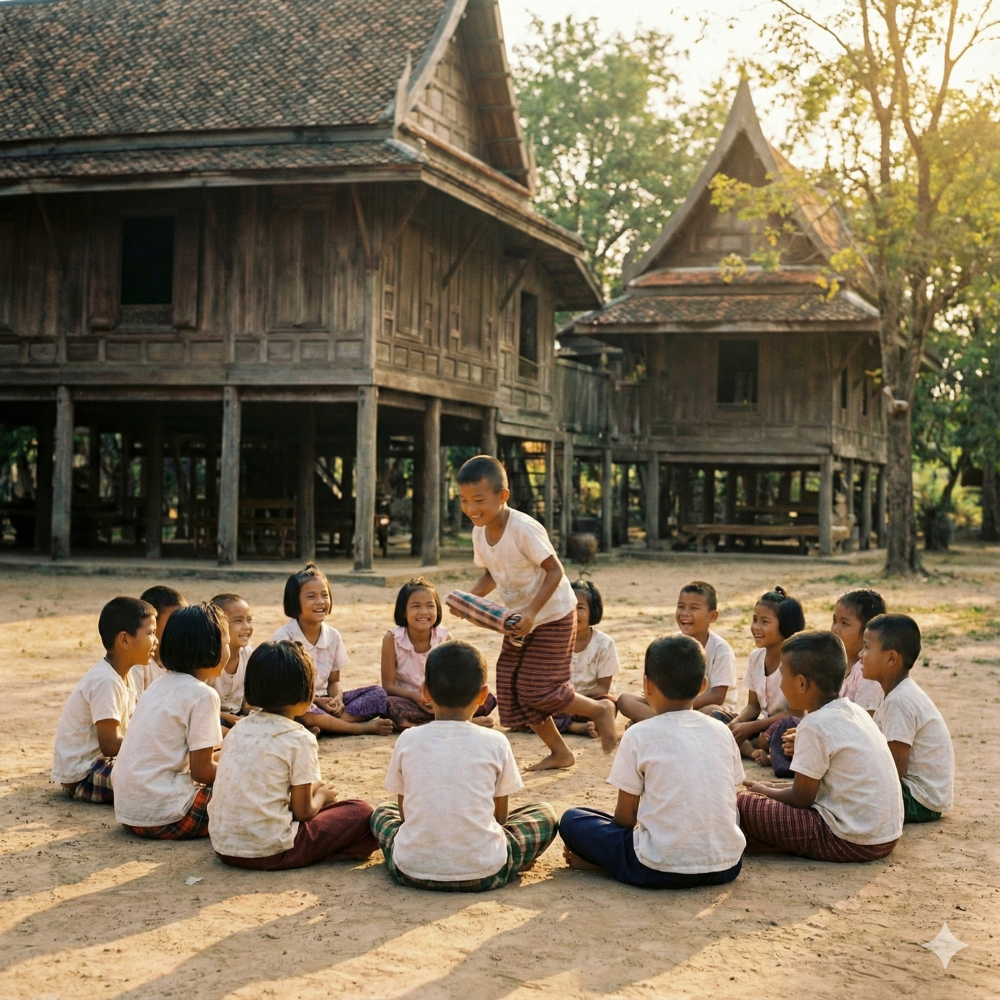

1. Mon Son Pha
Mon Son Pha It is a traditional Thai children's game that dates back to ancient times. It is believed to have originated from the Mon people living in Kanchanaburi province. It is popularly played during the Songkran festival, which is a holiday period for Thai people.